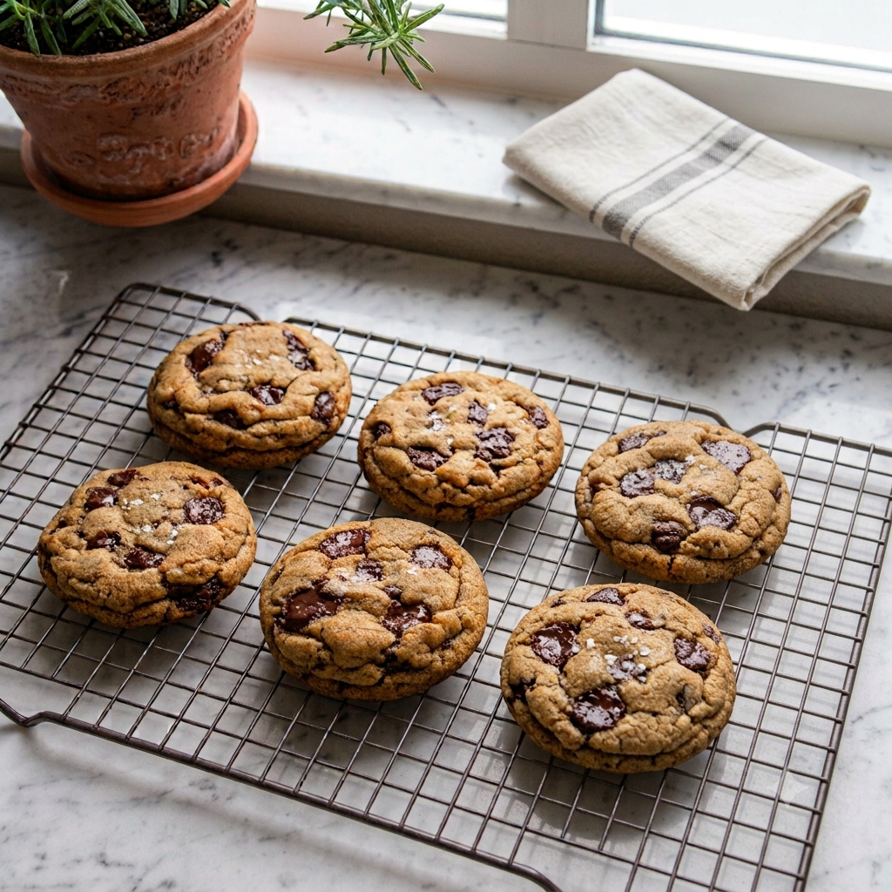

Classic Chocolate Chip Cookies

Description
Thick, soft, and freshly baked. These homemade cookies have a golden crunch on the outside, a chewy center, and just the right amount of chocolate in every bite.
Ingredients (Makes 15 cookies 85g/ea)
- 375g AP flour
- 105g softened unsalted butter
- 100g browned butter (from ~122g unsalted butter)
- 5g baking soda
- 4g baking powder
- 3g kosher salt
- 5g instant coffee
- 150g brown sugar
- 150g granulated sugar
- 2 large eggs
- 2 larg yolks
- 200g-250g chocolate chips (Callebaut 50.4 or 70.5)
Instructions
For the brown butter
- In a small saucepan over medium heat, melt $122\text{ g}$ of unsalted butter.
- Cook, swirling the pan, or mix occasionally. The butter will melt, foam, and then begin to crackle.
- After 3 to 5 minutes, when the crackling stops and golden-brown specks form at the bottom with a nutty aroma, remove immediately from heat.
- Pour the browned butter into a heatproof bowl (making sure to scrape out all the golden brown bits) and let it cool until warm.
For the cookies
- In a medium bowl, whisk together the dry ingredients: 375g AP flour, 5g baking soda, 4g baking powder, 3g kosher salt, and 5g instant coffee until evenly combined. Set aside.
- In a large mixing bowl, combine the softened unsalted butter, warm browned butter, brown sugar, and granulated sugar. Whisk for 1 to 2 minutes until fully incorporated.
- Add the 2 large eggs and 2 large yolks to the sugar-butter mixture one at a time, whisking thoroughly after each addition.
- Add the dry ingredient mixture to the wet ingredients. Fold gently with a rubber spatula just until almost combined (a few flour streaks are fine).
- Add the chocolate chips and gently fold until the chocolate is evenly distributed and no dry flour remains. Do not overmix.
- Chill the batter in the refrigerator for at least 2 hours (or overnight) before portioning and shaping.
- Bake at 180°C on parchment-lined sheets for 15 minutes until edges are golden (bake 2-3 minutes longer for more deeply browned cookies); let cool on the pan for 3 to 5 minutes before moving to a wire rack to continue cooling.
Notes:
- All ingredients should be at room temperature.
- Cookie dough can be stored in freezer for up to 3 months without losing flavor or quality.
- Freeze the dough balls on a tray for 1–2 hours until rock hard before transferring them to a ziplock bag. This keeps them from sticking together.
- Cookie dough can be baked straight from the freezer.
- Bake at a higher temperature for a shorter time for thick and chewy cookies (14 to 16 minutes at 180°C) or lower the oven temperature and add a few extra minutes (20 minutes at 165°C) to the baking time for flat and crispy cookies.
- The leftover egg whites can be used for almond financiers or almond tuile cookies recipes.
Home